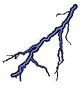
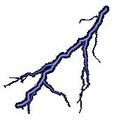

La geometría hiperbólica es una de las ramas fundamentales de la geometría no euclidiana,
caracterizada por su curvatura negativa constante y por alterar el quinto postulado de
Euclides, el postulado de las paralelas. Este cambio genera un universo geométrico
completamente diferente al que estamos acostumbrados en la geometría euclidiana. En este
mundo mágico 5 cuadrados interseccionan en un mismo vértice y el área de un triángulo no puede
ser mayor que π.


En su obra Los Elementos, Euclides formuló cinco postulados, de los cuales el quinto,
conocido como el postulado de las paralelas, establece que "si una línea recta intersecta a
otras dos de manera que la suma de los ángulos interiores en un lado es menor que dos
ángulos rectos, entonces esas dos líneas se encontrarán al extenderse en ese lado". Este
postulado ha sido percibido como menos intuitivo y más complicado que los otros cuatro.
Durante siglos, matemáticos intentaron demostrar el quinto postulado como un teorema
derivado de los otros postulados. Sin embargo, todos estos intentos fallaron, lo que
eventualmente llevó a la creación de sistemas geométricos alternativos.
Si bien la geometría hiperbólica se desarrolló de manera abstracta en el estudio del Quinto
Postulado , no fué hasta que se descubrieron
modelos analíticos del plano hiperbólico que la comunidad matemática la reconoció. A
principios del siglo XIX unos cuantos matemáticos como Lobachevsky y Bolyai sentaron sus
fundamentos demostrando sus teoremas fundamentales. Estaban convencidos de su
existencia y su solidez lógica, pero estaban también en franca minoria. Se les tachaba de
extravagancia o vil locura entre la comunidad científica. Se cuenta inclusive, que
matemáticos de renombre, como Gauss, tenían resultados en esa misma dirección pero no
los hicieron públicos por temor al descredito. En la segunda mitad de ese siglo empezaron a
surgir modelos del plano hiperbólico basados en la geometría euclidiana en dimensión
mayor, fué entonces evidente su existencia; si la geometría euclidiana era consistente,
también lo sería la hiperbólica.


1. Postulado de las Paralelas Modificado:
En geometría euclidiana, por un punto externo a una línea pasa una única
línea paralela. En geometría hiperbólica, existen infinitas líneas paralelas a
una dada que pasan por un punto externo.
2. Curvatura Negativa Constante:
La geometría hiperbólica se desarrolla en un espacio con curvatura negativa
constante, en contraste con la curvatura cero de la geometría euclidiana o la
curvatura positiva de la geometría esférica.
3. Propiedades de los Triángulos:
La suma de los ángulos interiores de un triángulo siempre es menor que
180°.
Cuanto mayor es el área del triángulo, menor es la suma de sus ángulos.
4. Crecimiento Exponencial:
Las áreas y los volúmenes en geometría hiperbólica crecen
exponencialmente con respecto al radio, una propiedad que contrasta con el
crecimiento polinomial en la geometría euclidiana.
Dado que la geometría hiperbólica no puede representarse físicamente en un espacio
tridimensional euclidiano, se usan modelos matemáticos para visualizarla. Los principales
modelos son:
|
|
Modelo del Disco de Poincaré
-
Representa el plano hiperbólico dentro de un disco unitario.
-
Las líneas son segmentos de circunferencias ortogonales al borde del disco o, en
algunos casos, diámetros del mismo.
-
Este modelo conserva los ángulos, haciéndolo útil para estudiar propiedades
angulares.
|
|
|
Modelo del Semiplano de Poincaré
-
Representa el plano hiperbólico como la región superior del plano cartesiano (y>0y>0).
-
Las líneas son semiarcos de circunferencia perpendiculares al eje x o líneas
verticales.
-
Es un modelo conforme, lo que significa que conserva los ángulos.
|
|
|
Modelo de Klein
-
También llamado modelo proyectivo, representa el plano hiperbólico dentro de un
disco unitario, donde las líneas son segmentos rectos.
-
Noconserva los ángulos, pero es útil para visualizar propiedades relacionadas con
la distancia.
|

|
Modelo Hiperbólico en 3D
-
Se representa como un hiperboloide de dos hojas en el espacio tridimensional,
utilizando fórmulas específicas para medir distancias y ángulos.
|
.png)
.png)
El estudio introductorio de la geometría hiperbólica se basa en la forma cuadrática de
Lorentz L(x) = L(x, y, z) := x2 + y2 - z2 , cuya matriz simétrica asociada es la matriz de
.png)
Usamos la misma letra L para ambas, confiando en que el
contexto hará claro a qué nos referimos. Tomémonos la libertad de pensar a la forma cuadrática de
Lorentz como una norma; como análoga a la norma euclidiana dada por la forma cuadrática
x2+y2+z2. La gran diferencia es que ahora tenemos vectores de norma negativa o cero.
Démosles nombres: Un vector x ∈ R3 es espacial, si L(x) > 0 es temporal y si L(x) < 0 es luz,
si L(x)=0 . Geométricamente, los vectores
luz forman el cono sobre S1 en el plano z = 1; los temporales
están dentro del cono y los espaciales fuera de él.
Llamando a un vector x ∈ R3, unitario (o L-unitario cuando haya que diferenciar con los
euclidianamente unitarios) si cumple que |L(x)| = 1. Tenemos entonces espaciales unitarios
(L(x)=1) que forman un hiperboloide reglado, y temporales unitarios (L(x) = −1) que forman
un hiperboloide de dos hojas. La de arriba será nuestro centro de atención.
El plano hiperbólico es H2 := © x ∈ R3 | L(x) = −1 , x · e3 > 0 a . Ya tenemos los puntos,
que forman lo que coloquialmente llamaremos la “cazuela hiperbólica” para enfatizar que
vive en R3. Es claro que localmente es como un plano. Definamos ahora las rectas.
Una recta del plano hiperbólico es su intersección no vacía con un plano por
el origen. Es decir, si Π es un plano por el origen tal que Π tiene vectores temporales,
entonces ` = H2 ∩ Π es una recta hiperbólica.Tuvimos que especificar que la intersección
fuera no vacía pues claramente hay planos espaciales, es decir, que constan de puros
vectores espaciales, como por ejemplo el z = 0. De tal manera que las rectas hiperbólicas
son, vistas en su plano correspondiente, una rama de hipérbola y sus asíntotas son la
intersección del plano con el cono de luz.
-
Distancia Hiperbólica:
-
La distancia entre puntos se define de manera diferente, incorporando la
curvatura negativa del espacio.
-
Congruencia:
-
Las figuras congruentes pueden tener propiedades distintas a las de sus
equivalentes euclidianos, como la forma y proporciones de los triángulos.
-
Relaciones Trigonométricas:
-
Las funciones trigonométricas en la geometría hiperbólica se modifican; por
ejemplo, se utilizan las funciones seno hiperbólico (sinh\sinh) y coseno
hiperbólico (cosh\cosh).
1. Matemáticas Puras
Topología: Es crucial para estudiar variedades tridimensionales y estructuras
geométricas complejas.
Teoría de Grupos: Los grupos fuchsianos y kleinianos, que actúan en espacios
hiperbólicos, son fundamentales en matemáticas puras.
2. Física
Relatividad Especial: Los diagramas de Minkowski usan geometría hiperbólica para
describir la relación entre eventos en el espacio-tiempo.
Cosmología: Modelos del universo con curvatura negativa se basan en la geometría
hiperbólica.
3. Informática
Visualización de Datos: Es útil para representar grandes redes debido a su
capacidad de expansionar el espacio visual.
Criptografía: Se han propuesto algoritmos basados en propiedades de los espacios
hiperbólicos.
 (1).gif)
 JUEGALO AHORA
JUEGALO AHORA


 
